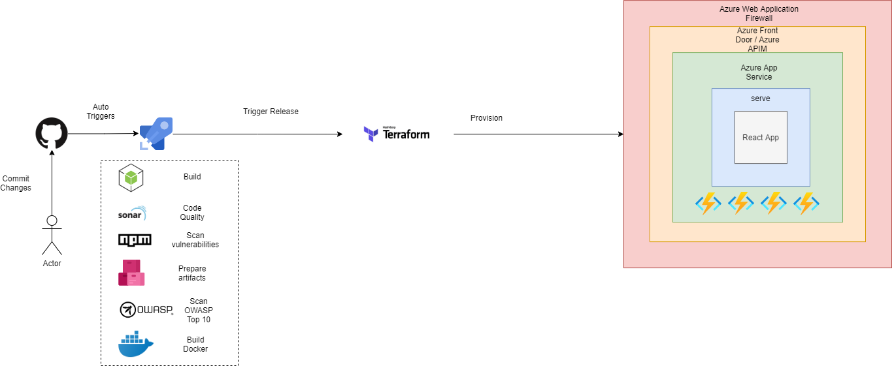
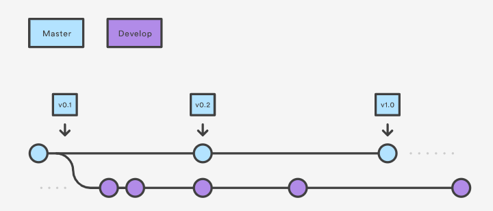
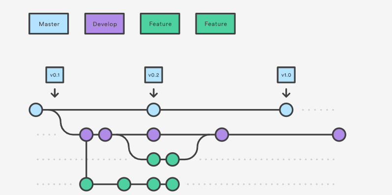
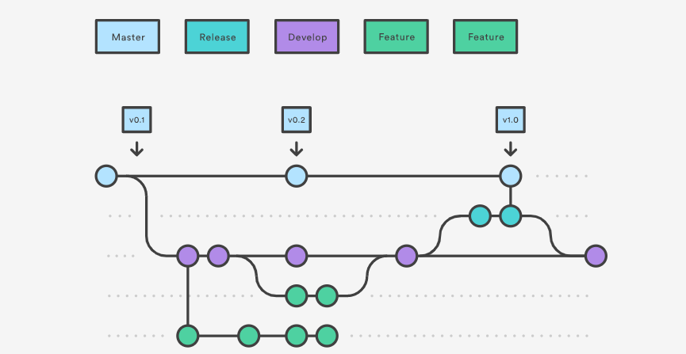
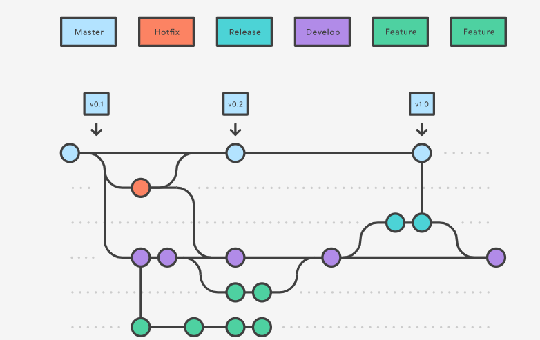

General Application CI/CD Overview
This document is being provided as a general reference and is not directly applicable to UPtime deployment and configuration procedures.
.
How we manage source code for release
Github Work Flow
- https://www.atlassian.com/git/tutorials/comparing-workflows/gitflow-workflow
Develop and Master Branches
- Instead of a single master branch, this workflow uses two branches to record the history of the project. The master branch stores the official release history, and the develop branch serves as an integration branch for features. It’s also convenient to tag all commits in the master branch with a version number.

Feature Branches
-
Each new feature should reside in its own branch, which can be pushed to the central repository for backup/collaboration. But, instead of branching off of master, feature branches use develop as their parent branch. When a feature is complete, it gets merged back into develop. Features should never interact directly with master.
-
We suggest we should give the feature branch as JIRA ticket number, it will help us to manage them in the future
-
When you’re done with the development work on the feature, the next step is to merge the feature_branch into develop.

Release Branches
-
Once develop has acquired enough features for a release (or a predetermined release date is approaching), you fork a release branch off of develop. Creating this branch starts the next release cycle, so no new features can be added after this point—only bug fixes, documentation generation, and other release-oriented tasks should go in this branch. Once it’s ready to ship, the release branch gets merged into master and tagged with a version number. In addition, it should be merged back into develop, which may have progressed since the release was initiated.
-
Using a dedicated branch to prepare releases makes it possible for one team to polish the current release while another team continues working on features for the next release. It also creates well-defined phases of development (e.g., it’s easy to say, “This week we’re preparing for version 4.0,” and to actually see it in the structure of the repository).

Hotfix Branches
- Maintenance or “hotfix” branches are used to quickly patch production releases. Hotfix branches are a lot like release branches and feature branches except they’re based on master instead of develop. This is the only branch that should fork directly off of master. As soon as the fix is complete, it should be merged into both master and develop (or the current release branch), and master should be tagged with an updated version number.

Azure DevOps Variables and Security
Variables give you a convenient way to get key bits of data into various parts of the pipeline. The most common use of variables is to define a value that you can then use in your pipeline. All variables are stored as strings and are mutable. The value of a variable can change from run to run or job to job of your pipeline.
When you define the same variable in multiple places with the same name, the most locally scoped variable wins. So, a variable defined at the job level can override a variable set at the stage level. A variable defined at the stage level will override a variable set at the pipeline root level. A variable set in the pipeline root level will override a variable set in the Pipeline settings UI.
Variables are different from runtime parameters, which are typed and available during template parsing.
Use a variable group to store values that you want to control and make available across multiple pipelines. You can also use variable groups to store secrets and other values that might need to be passed into a YAML pipeline. Variable groups are defined and managed in the Library page under Pipelines.
More information: https://docs.microsoft.com/en-us/azure/devops/pipelines/library/variable-groups?view=azure-devops&tabs=classic
Variable scopes
In the YAML file, you can set a variable at various scopes:
- At the root level, to make it available to all jobs in the pipeline.
- At the stage level, to make it available only to a specific stage.
- At the job level, to make it available only to a specific job. When a variable is defined at the top of a YAML, it will be available to all jobs and stages in the pipeline and is a global variable. Global variables defined in a YAML are not visible in the pipeline settings UI.
Variables at the job level override variables at the root and stage level. Variables at the stage level override variables at the root level.
Access variables through the environment
Notice that variables are also made available to scripts through environment variables. The syntax for using these environment variables depends on the scripting language.
The name is upper-cased, and the . is replaced with the _. This is automatically inserted into the process environment. Here are some examples:
- Batch script: %VARIABLE_NAME%
- PowerShell script: $env:VARIABLE_NAME
- Bash script: $VARIABLE_NAME
Set secret variables
To set secrets in the web interface, follow these steps:
- Go to the Pipelines page, select the appropriate pipeline, and then select Edit.
- Locate the Variables for this pipeline.
- Add or update the variable.
- Select the Secret lock icon to store the variable in an encrypted manner.
- Save the pipeline.
- Secret variables are encrypted at rest with a 2048-bit RSA key. Secrets are available on the agent for tasks and scripts to use. Be careful about who has access to alter your pipeline.
Unlike a normal variable, they are not automatically decrypted into environment variables for scripts. You need to explicitly map secret variables.
Share variables across pipelines
To share variables across multiple pipelines in your project, use the web interface. Under Library, use variable groups.
More information: https://docs.microsoft.com/en-us/azure/devops/pipelines/process/variables?view=azure-devops&tabs=yaml%2Cbatch
Terraform
For the application we are using terraform to build and deploy the environments and components
Prerequisites
- Terraform CLI: https://www.terraform.io/downloads.html ( for development environment)
- Azure Service Principle Key has Owner Permission on Subscription
- Has Access Rights to access Azure DevOps
- https://dev.azure.com/mwa-microservices/Microservices%20Capabilities Source Code and Build
- https://github.dxc.com/MWA/provision
- https://dev.azure.com/mwa-microservices/Microservices%20Capabilities/_release?_a=releases&view=mine&definitionId=1
variable "customer_name" {
default = "$(customer_name)"
}
variable "az_subscription" {
default = "$(az_subscription)"
}
variable "az_username" {
default = "$(az_username)"
}
variable "az_password" {
default = "$(az_password)"
}
variable "az_tenant" {
default = "$(az_tenant)"
}
variable "DOCKER_REGISTRY_SERVER_PASSWORD" {
default = "$(DOCKER_REGISTRY_SERVER_PASSWORD)"
}
variable "DOCKER_REGISTRY_SERVER_URL" {
default = "$(DOCKER_REGISTRY_SERVER_URL)"
}
variable "DOCKER_REGISTRY_SERVER_USERNAME" {
default = "$(DOCKER_REGISTRY_SERVER_USERNAME)"
}
variable "frontend_image" {
default = "$(frontend_image)"
}
variable "backend_image" {
default = "$(backend_image)"
}
variable "itsm_image" {
default = "$(itsm_image)"
}
variable "itsm_servicenow_image" {
default = "$(itsm_servicenow_image)"
}
variable "app_database_image" {
default = "$(app_database_image)"
}
variable "notification_image" {
default = "$(notification_image)"
}
variable "apim_sku_name" {
default = "$(apim_sku_name)"
}
variable "location" {
default = "$(location)"
}
variable "PDXC_API" {
default = "$(PDXC_API)"
}
variable "SNOW_PW" {
default = "$(SNOW_PW)"
}
variable "SNOW_URL" {
default = "$(SNOW_URL)"
}
variable "SNOW_USER" {
default = "$(SNOW_USER)"
}
variable "keyvault_name" {
default = "$(keyvaultName)"
}
variable "apim_name" {
default = "$(apim_name)"
}
variable "cdn_name" {
default = "$(cdn_name)"
}
variable "KB_ANNOUCEMENT_ENCODED_QUERY" {
default = "$(KB_ANNOUCEMENT_ENCODED_QUERY)"
}
variable "KB_FEATURED_ENCODED_QUERY" {
default = "$(KB_FEATURED_ENCODED_QUERY)"
}
variable "KB_TOP_ENCODED_QUERY" {
default = "$(KB_TOP_ENCODED_QUERY)"
}
variable "KB_ANNOUCEMENT_CONDITION" {
default = "$(KB_ANNOUCEMENT_CONDITION)"
}
variable "FIREBASE_ADMIN_AUTH" {
default = "$(FIREBASE_ADMIN_AUTH)"
}
variable "FIREBASE_ADMIN_ENDPOINT" {
default = "$(FIREBASE_ADMIN_ENDPOINT)"
}
variable "KB_BASE_IDS" {
default = "$(KB_BASE_IDS)"
}
Deployment Patterns:
- $(name)-shared-resource (resource group)
- $(name)-appservice-linux (appservice - https://azure.microsoft.com/en-us/services/app-service/)
- $(name)–application-insight ( application insight - https://docs.microsoft.com/en-us/azure/azure-monitor/app/app-insights-overview)
- tfsta (storage account- https://azure.microsoft.com/en-us/pricing/details/storage/)
- $(name)-apim $(name)-frontend (azure front door - https://azure.microsoft.com/en-us/services/frontdoor/)
- $(name)wafpolicy (WAF policy - https://docs.microsoft.com/en-us/azure/web-application-firewall/ag/policy-overview)
- $(name)-microservices-apim (api management - https://azure.microsoft.com/en-us/services/api-management/)
- $(name)-cosmos-db (https://azure.microsoft.com/en-us/services/cosmos-db/)
- $(name)-redis-cache (https://azure.microsoft.com/en-us/services/cache/)
- $(name)-srg (https://docs.microsoft.com/en-us/azure/virtual-network/network-security-groups-overview)
- $(name)-vnet (https://docs.microsoft.com/en-us/azure/virtual-network/virtual-networks-overview)
- $(name)-keyvault (https://azure.microsoft.com/en-us/services/key-vault/)
- $(name)-frontend (resource group)
- $(name)-frontend (webapp - https://azure.microsoft.com/en-us/services/app-service/web/)
- $(name)-backend (resource group)
- itsm-microservice (function app - https://azure.microsoft.com/en-us/services/functions/)
- itsm-servicenow-microservice (function app - https://azure.microsoft.com/en-us/services/functions/)
- app-database-microservice (function app - https://azure.microsoft.com/en-us/services/functions/)
Front End CI/CD
Prerequisites
- Azure Service Principle Key has Owner Permission on Subscription
- Has Access Rights to access Azure DevOps
- https://dev.azure.com/mwa-microservices/Microservices%20Capabilities
Source Code and Build
- https://github.dxc.com/MWA/helix-frontend-webapp
- https://dev.azure.com/mwa-microservices/Microservices%20Capabilities/_build?definitionId=4
Build Pipeline:
For the latest version you can find in here https://github.dxc.com/MWA/helix-frontend-webapp/blob/develop/azure-pipelines.yml
- stage: Vulnerability
displayName: Scan vulnerability application
jobs:
- job: Npm_Vulnerability
displayName: Npm Vulnerability
steps:
- task: Npm@1
displayName: npm install
inputs:
command: 'install'
workingDir: 'azure/src'
- task: CmdLine@2
displayName: npm audit
inputs:
script: |
sudo npm install -g retire --unsafe-perm=true --allow-root
sudo npm install -g npm-audit-html --unsafe-perm=true --allow-root
npm audit --json | npm-audit-html
ls
workingDirectory: 'azure/src'
- task: CopyFiles@2
displayName: 'Copy Files to: Copy Vulnerability Report'
inputs:
SourceFolder: './azure/src'
Contents: |
npm-audit.html
!node_modules/**
TargetFolder: '$(Build.ArtifactStagingDirectory)'
OverWrite: true
- task: PublishBuildArtifacts@1
inputs:
PathtoPublish: '$(Build.ArtifactStagingDirectory)'
ArtifactName: 'vulnerability-report'
publishLocation: 'Container'
- stage: Publish
displayName: Publish Artifacts
jobs:
- job: publish
displayName: Publish
steps:
- task: Docker@2
inputs:
containerRegistry: 'mwamicroservicesdev'
repository: 'mwa-microservice/build/helix/helix-frontend'
command: 'buildAndPush'
Dockerfile: 'azure/src/Dockerfile'
tags: '$(Build.SourceBranchName).$(Build.BuildId)'
- task: CopyFiles@2
displayName: 'Copy Files to: Staging Artifact'
inputs:
SourceFolder: ./azure
TargetFolder: '$(Build.ArtifactStagingDirectory)'
OverWrite: true
- task: PublishBuildArtifacts@1
inputs:
PathtoPublish: '$(Build.ArtifactStagingDirectory)'
ArtifactName: 'uptime-frontend'
publishLocation: 'Container'
Configuration file
For some limitation in React we can’t set variables environment in azure webapp settings. We need to modify it before docker build step
- https://dev.azure.com/mwa-microservices/Microservices%20Capabilities/_release?_a=releases&view=mine&definitionId=8
REACT_APP_AZURE_REG=$(REACT_APP_AZURE_REG) REACT_APP_WEBSITE_NAME=$(REACT_APP_WEBSITE_NAME) REACT_APP_OCP_APIM_URL=$(REACT_APP_OCP_APIM_URL) REACT_APP_OCP_APIM_SUBSCRIPTION_KEY=$(REACT_APP_OCP_APIM_SUBSCRIPTION_KEY) REACT_APP_APPINSIGHTS_INSTRUMENTATIONKEY=$(APPINSIGHTS_INSTRUMENTATIONKEY) REACT_APP_OKTA_BASE_URL=$(REACT_APP_OKTA_BASE_URL) REACT_APP_OKTA_CLIENTID=$(REACT_APP_OKTA_CLIENTID) REACT_APP_OKTA_LOGO=$(REACT_APP_OKTA_LOGO) REACT_APP_FIREBASE_APIKEY=$(REACT_APP_FIREBASE_APIKEY) REACT_APP_FIREBASE_AUTHDOMAIN=$(REACT_APP_FIREBASE_AUTHDOMAIN) REACT_APP_FIREBASE_PROJECTID=$(REACT_APP_FIREBASE_PROJECTID) REACT_APP_FIREBASE_STORAGEBUCKET=$(REACT_APP_FIREBASE_STORAGEBUCKET) REACT_APP_FIREBASE_MESSAGINGSENDERID=$(REACT_APP_FIREBASE_MESSAGINGSENDERID) REACT_APP_FIREBASE_APPID=$(REACT_APP_FIREBASE_APPID) REACT_APP_NOTIFICATION_OCP_APIM_URL=$(REACT_APP_NOTIFICATION_OCP_APIM_URL) REACT_APP_NOTIFICATION_OCP_APIM_SUBSCRIPTION_KEY=$(REACT_APP_NOTIFICATION_OCP_APIM_SUBSCRIPTION_KEY)Backend CI/CD
ITSM CI/CD
Prerequisites
- Azure Service Principle Key has Owner Permission on Subscription
- Has Access Rights to access Azure DevOps
- https://dev.azure.com/mwa-microservices/Microservices%20Capabilities
Source Code and Build
- https://github.dxc.com/MWA/ms-itsm
- https://dev.azure.com/mwa-microservices/Microservices%20Capabilities/_build?definitionId=8
- http://mwasonarqube.eastus2.cloudapp.azure.com/dashboard?id=build%3Ahelix-itsm-microservice
Build Pipeline:
For the latest version you can find in here https://github.dxc.com/MWA/ms-itsm/blob/develop/azure-pipelines.yml
# Starter pipeline
# Start with a minimal pipeline that you can customize to build and deploy your code.
# Add steps that build, run tests, deploy, and more:
# https://aka.ms/yaml
trigger:
- master
- develop
- release/*
pool:
vmImage: 'ubuntu-20.04'
stages:
- stage: Build
displayName: Build application
jobs:
- job: Build
displayName: Nodejs Build
steps:
- task: Npm@1
displayName: npm install
inputs:
command: 'install'
workingDir: 'azure/function'
- stage: Code_Quality
displayName: Scan Code Quality
condition: and(succeeded(), ne(variables['Build.Reason'], 'PullRequest'))
jobs:
- job: Sonar
displayName: Sonar
steps:
- task: SonarQubePrepare@4
inputs:
SonarQube: 'mwasonarqube'
scannerMode: 'CLI'
configMode: 'manual'
cliProjectKey: 'build:helix-itsm-microservice'
cliProjectName: 'build:helix-itsm-microservice'
cliProjectVersion: '$(Build.SourceBranchName)'
cliSources: '.'
extraProperties: |
# Additional properties that will be passed to the scanner,
# Put one key=value per line, example:
# sonar.exclusions=**/*.bin
sonar.coverage.exclusions = "**/server.js"
- task: SonarQubeAnalyze@4
- task: SonarQubePublish@4
inputs:
pollingTimeoutSec: '300'
- stage: Vulnerability
displayName: Scan vulnerability application
jobs:
- job: Npm_Vulnerability
displayName: Npm Vulnerability
steps:
- task: Npm@1
displayName: npm install
inputs:
command: 'install'
workingDir: 'azure/function'
- task: CmdLine@2
displayName: npm audit
inputs:
script: |
sudo npm install -g retire --unsafe-perm=true --allow-root
sudo npm install -g npm-audit-html --unsafe-perm=true --allow-root
npm audit --json | npm-audit-html
ls
workingDirectory: 'azure/function'
- task: CopyFiles@2
displayName: 'Copy Files to: Copy Vulnerability Report'
inputs:
SourceFolder: './azure/function'
Contents: |
npm-audit.html
!node_modules/**
TargetFolder: '$(Build.ArtifactStagingDirectory)'
OverWrite: true
- task: PublishBuildArtifacts@1
inputs:
PathtoPublish: '$(Build.ArtifactStagingDirectory)'
ArtifactName: 'vulnerability-report'
publishLocation: 'Container'
- stage: Publish
displayName: Publish Artifacts
jobs:
- job: publish
displayName: Publish
steps:
- task: CopyFiles@2
displayName: 'Copy Files to: Staging Artifact'
inputs:
SourceFolder: ./azure
TargetFolder: '$(Build.ArtifactStagingDirectory)'
OverWrite: true
- task: PublishBuildArtifacts@1
inputs:
PathtoPublish: '$(Build.ArtifactStagingDirectory)'
ArtifactName: 'helix-itsm-microservice'
publishLocation: 'Container'
Terraform Template
The latest version you can find in here https://github.dxc.com/MWA/provision/blob/master/usecase/helix/main.tf
resource "azurerm_resource_group" "itsm_beg" {
name = "${var.customer_name}-backend"
location = "${var.location }"
}
resource "azurerm_function_app" "itsm_beg" {
name = "${var.customer_name}-itsm-microservice"
location = azurerm_resource_group.itsm_beg.location
resource_group_name = azurerm_resource_group.itsm_beg.name
app_service_plan_id = azurerm_app_service_plan.srg.id
storage_account_name = azurerm_storage_account.srg.name
storage_account_access_key = azurerm_storage_account.srg.primary_access_key
os_type = "linux"
https_only = true
site_config {
always_on = true
linux_fx_version = "DOCKER|${var.itsm_image}"
}
app_settings = {
DOCKER_REGISTRY_SERVER_PASSWORD = "@Microsoft.KeyVault(SecretUri=${azurerm_key_vault_secret.DOCKER_REGISTRY_SERVER_PASSWORD.versionless_id}/${azurerm_key_vault_secret.DOCKER_REGISTRY_SERVER_PASSWORD.version})"
DOCKER_REGISTRY_SERVER_URL = "@Microsoft.KeyVault(SecretUri=${azurerm_key_vault_secret.DOCKER_REGISTRY_SERVER_URL.versionless_id}/${azurerm_key_vault_secret.DOCKER_REGISTRY_SERVER_URL.version})"
DOCKER_REGISTRY_SERVER_USERNAME = "@Microsoft.KeyVault(SecretUri=${azurerm_key_vault_secret.DOCKER_REGISTRY_SERVER_USERNAME.versionless_id}/${azurerm_key_vault_secret.DOCKER_REGISTRY_SERVER_USERNAME.version})"
APPINSIGHTS_INSTRUMENTATIONKEY = "@Microsoft.KeyVault(SecretUri=${azurerm_key_vault_secret.APPINSIGHTS_INSTRUMENTATIONKEY.versionless_id}/${azurerm_key_vault_secret.APPINSIGHTS_INSTRUMENTATIONKEY.version})"
APPLICATIONINSIGHTS_CONNECTION_STRING = "@Microsoft.KeyVault(SecretUri=${azurerm_key_vault_secret.APPLICATIONINSIGHTS_CONNECTION_STRING.versionless_id}/${azurerm_key_vault_secret.APPLICATIONINSIGHTS_CONNECTION_STRING.version})"
ITSM_SERVICENOW = "@Microsoft.KeyVault(SecretUri=${azurerm_key_vault_secret.ITSM_SERVICENOW.versionless_id}/${azurerm_key_vault_secret.ITSM_SERVICENOW.version})"
DB_API = "@Microsoft.KeyVault(SecretUri=${azurerm_key_vault_secret.DB_API.versionless_id}/${azurerm_key_vault_secret.DB_API.version})"
REDISCACHEHOSTNAME = "@Microsoft.KeyVault(SecretUri=${azurerm_key_vault_secret.REDISCACHEHOSTNAME.versionless_id}/${azurerm_key_vault_secret.REDISCACHEHOSTNAME.version})"
REDISCACHEKEY = "@Microsoft.KeyVault(SecretUri=${azurerm_key_vault_secret.REDISCACHEKEY.versionless_id}/${azurerm_key_vault_secret.REDISCACHEKEY.version})"
AZURE_STORAGE = "@Microsoft.KeyVault(SecretUri=${azurerm_key_vault_secret.AZURE_STORAGE.versionless_id}/${azurerm_key_vault_secret.AZURE_STORAGE.version})"
WEBSITE_ENABLE_SYNC_UPDATE_SITE = true
WEBSITES_ENABLE_APP_SERVICE_STORAGE = false
}
}
ITSM-Servicenow CI/CD
Prerequisites
- Azure Service Principle Key has Owner Permission on Subscription
- Has Access Rights to access Azure DevOps
- https://dev.azure.com/mwa-microservices/Microservices%20Capabilities
Source Code and Build
- https://github.dxc.com/MWA/ms-itsm-servicenow
- https://dev.azure.com/mwa-microservices/Microservices%20Capabilities/_build?definitionId=9
- http://mwasonarqube.eastus2.cloudapp.azure.com/dashboard?id=build%3Ahelix-itsm-servicenow-microservice
Build Pipeline:
For the latest version you can find in here https://github.dxc.com/MWA/ms-itsm-servicenow/blob/develop/azure-pipelines.yml
# Starter pipeline
# Start with a minimal pipeline that you can customize to build and deploy your code.
# Add steps that build, run tests, deploy, and more:
# https://aka.ms/yaml
trigger:
- master
- develop
- feature/*
- release/*
pool:
vmImage: 'ubuntu-20.04'
stages:
- stage: Build
displayName: Build application
jobs:
- job: Build
displayName: Nodejs Build
steps:
- task: Npm@1
displayName: npm install
inputs:
command: 'install'
workingDir: 'azure/function'
- stage: Code_Quality
displayName: Scan Code Quality
condition: and(succeeded(), ne(variables['Build.Reason'], 'PullRequest'))
jobs:
- job: Sonar
displayName: Sonar
steps:
- task: SonarQubePrepare@4
inputs:
SonarQube: 'mwasonarqube'
scannerMode: 'CLI'
configMode: 'manual'
cliProjectKey: 'build:helix-itsm-servicenow-microservice'
cliProjectName: 'build:helix-itsm-servicenow-microservice'
cliProjectVersion: '$(Build.SourceBranchName)'
cliSources: '.'
extraProperties: |
# Additional properties that will be passed to the scanner,
# Put one key=value per line, example:
# sonar.exclusions=**/*.bin
sonar.coverage.exclusions = "**/server.js"
- task: SonarQubeAnalyze@4
- task: SonarQubePublish@4
inputs:
pollingTimeoutSec: '300'
- stage: Vulnerability
displayName: Scan vulnerability application
jobs:
- job: Npm_Vulnerability
displayName: Npm Vulnerability
steps:
- task: Npm@1
displayName: npm install
inputs:
command: 'install'
workingDir: 'azure/function'
- task: CmdLine@2
displayName: npm audit
inputs:
script: |
sudo npm install -g retire --unsafe-perm=true --allow-root
sudo npm install -g npm-audit-html --unsafe-perm=true --allow-root
npm audit --json | npm-audit-html
ls
workingDirectory: 'azure/function'
- task: CopyFiles@2
displayName: 'Copy Files to: Copy Vulnerability Report'
inputs:
SourceFolder: './azure/function'
Contents: |
npm-audit.html
!node_modules/**
TargetFolder: '$(Build.ArtifactStagingDirectory)'
OverWrite: true
- task: PublishBuildArtifacts@1
inputs:
PathtoPublish: '$(Build.ArtifactStagingDirectory)'
ArtifactName: 'vulnerability-report'
publishLocation: 'Container'
- stage: Publish
displayName: Publish Artifacts
jobs:
- job: publish
displayName: Publish
steps:
- task: CopyFiles@2
displayName: 'Copy Files to: Staging Artifact'
inputs:
SourceFolder: ./azure
TargetFolder: '$(Build.ArtifactStagingDirectory)'
OverWrite: true
- task: PublishBuildArtifacts@1
inputs:
PathtoPublish: '$(Build.ArtifactStagingDirectory)'
ArtifactName: 'helix-itsm-servicenow-microservice'
publishLocation: 'Container'
Terraform Template
The latest version you can find in here https://github.dxc.com/MWA/provision/blob/master/usecase/helix/main.tf
resource "azurerm_resource_group" "itsm_servicenow_beg" {
name = "${var.customer_name}-backend"
location = "${var.location }"
}
resource "azurerm_function_app" "itsm_servicenow_beg" {
name = "${var.customer_name}-itsm-servicenow-microservice"
location = azurerm_resource_group.itsm_servicenow_beg.location
resource_group_name = azurerm_resource_group.itsm_servicenow_beg.name
app_service_plan_id = azurerm_app_service_plan.srg.id
storage_account_name = azurerm_storage_account.srg.name
storage_account_access_key = azurerm_storage_account.srg.primary_access_key
os_type = "linux"
https_only = true
version = "~3"
identity {
type = "SystemAssigned"
}
site_config {
always_on = true
linux_fx_version = "DOCKER|${var.itsm_servicenow_image}"
}
app_settings = {
DOCKER_REGISTRY_SERVER_PASSWORD = "${var.DOCKER_REGISTRY_SERVER_PASSWORD}"
DOCKER_REGISTRY_SERVER_URL = "${var.DOCKER_REGISTRY_SERVER_URL}"
DOCKER_REGISTRY_SERVER_USERNAME = "${var.DOCKER_REGISTRY_SERVER_USERNAME}"
APPINSIGHTS_INSTRUMENTATIONKEY = azurerm_application_insights.srg.instrumentation_key
APPLICATIONINSIGHTS_CONNECTION_STRING = azurerm_application_insights.srg.connection_string
SNOW_URL = "@Microsoft.KeyVault(SecretUri=${azurerm_key_vault_secret.SNOW_URL.versionless_id}/${azurerm_key_vault_secret.SNOW_URL.version})"
SNOW_USER = "@Microsoft.KeyVault(SecretUri=${azurerm_key_vault_secret.SNOW_USER.versionless_id}/${azurerm_key_vault_secret.SNOW_USER.version})"
SNOW_PW = "@Microsoft.KeyVault(SecretUri=${azurerm_key_vault_secret.SNOW_PW.versionless_id}/${azurerm_key_vault_secret.SNOW_PW.version})"
CONNECTNOW_INBOUND = "api/mpsc/connectnow/inbound"
PDXC_INTEGRATION = true
KB_BASE_IDS = "${var.KB_BASE_IDS}"
FE_KB_URL_TEMPLATE = "https://${var.customer_name}-frontend.azurefd.net/knowledges/detail/{KB_NUMBER}"
PDXC_API = "${var.PDXC_API}"
KB_CONTENT_TEXT_LIMIT = "200"
PDXC_API_TABLE_URL = "{\"INCIDENT\":\"inc1-dev\",\"REQUEST\":\"req1-dev\"}"
KB_ANNOUCEMENT_ENCODED_QUERY = "${var.KB_ANNOUCEMENT_ENCODED_QUERY}"
KB_TOP_ENCODED_QUERY = "${var.KB_TOP_ENCODED_QUERY}"
KB_FEATURED_ENCODED_QUERY = "${var.KB_FEATURED_ENCODED_QUERY}"
KB_ANNOUCEMENT_CONDITION = "${var.KB_ANNOUCEMENT_CONDITION}"
WEBSITE_ENABLE_SYNC_UPDATE_SITE = true
WEBSITES_ENABLE_APP_SERVICE_STORAGE = false
}
}
App-database CI/CD
Prerequisites
- Azure Service Principle Key has Owner Permission on Subscription
- Has Access Rights to access Azure DevOps
- https://dev.azure.com/mwa-microservices/Microservices%20Capabilities
Source Code and Build
- https://github.dxc.com/MWA/ms-app-database
- https://dev.azure.com/mwa-microservices/Microservices%20Capabilities/_build?definitionId=10
Build Pipeline:
For the latest version you can find in here https://github.dxc.com/MWA/ms-app-database/blob/develop/azure-pipelines.yml ```yaml resource “azurerm_resource_group” “cosmos_app_database_beg” { name = “${var.customer_name}-backend” location = “${var.location }” }
resource “azurerm_function_app” “cosmos_app_database_beg” { name = “${var.customer_name}-app-database-microservice” location = azurerm_resource_group.cosmos_app_database_beg.location resource_group_name = azurerm_resource_group.cosmos_app_database_beg.name app_service_plan_id = azurerm_app_service_plan.srg.id storage_account_name = azurerm_storage_account.srg.name storage_account_access_key = azurerm_storage_account.srg.primary_access_key os_type = “linux” https_only = true version = “~3” identity { type = “SystemAssigned” } site_config { always_on = true linux_fx_version = “DOCKER|${var.app_database_image}” } app_settings = { DOCKER_REGISTRY_SERVER_PASSWORD = “${var.DOCKER_REGISTRY_SERVER_PASSWORD}” DOCKER_REGISTRY_SERVER_URL = “${var.DOCKER_REGISTRY_SERVER_URL}” DOCKER_REGISTRY_SERVER_USERNAME = “${var.DOCKER_REGISTRY_SERVER_USERNAME}” APPINSIGHTS_INSTRUMENTATIONKEY = azurerm_application_insights.srg.instrumentation_key APPLICATIONINSIGHTS_CONNECTION_STRING = azurerm_application_insights.srg.connection_string HOST = “@Microsoft.KeyVault(SecretUri=${azurerm_key_vault_secret.HOST.versionless_id}/${azurerm_key_vault_secret.HOST.version})” AUTH_KEY = “@Microsoft.KeyVault(SecretUri=${azurerm_key_vault_secret.AUTH_KEY.versionless_id}/${azurerm_key_vault_secret.AUTH_KEY.version})” DATABASE_ID = “@Microsoft.KeyVault(SecretUri=${azurerm_key_vault_secret.DATABASE_ID.versionless_id}/${azurerm_key_vault_secret.DATABASE_ID.version})” DATABASE_CONNECTION = “@Microsoft.KeyVault(SecretUri=${azurerm_key_vault_secret.DATABASE_CONNECTION.versionless_id}/${azurerm_key_vault_secret.DATABASE_CONNECTION.version})” ITSM_SERVICES_API = “@Microsoft.KeyVault(SecretUri=${azurerm_key_vault_secret.ITSM_SERVICES_API.versionless_id}/${azurerm_key_vault_secret.ITSM_SERVICES_API.version})” WEBSITE_ENABLE_SYNC_UPDATE_SITE = true WEBSITES_ENABLE_APP_SERVICE_STORAGE = false } }
## Notification CI/CD
### Prerequisites
- Azure Service Principle Key has Owner Permission on Subscription
- Has Access Rights to access Azure DevOps
- https://dev.azure.com/mwa-microservices/Microservices%20Capabilities
### Source Code and Build
- https://github.dxc.com/MWA/ms-notification
- https://dev.azure.com/mwa-microservices/Microservices%20Capabilities/_build?definitionId=12
## Build Pipeline:
For the latest version you can find in here https://github.dxc.com/MWA/ms-notification/blob/develop/azure-pipelines.yml
```yaml
resource "azurerm_resource_group" "notification_beg" {
name = "${var.customer_name}-backend"
location = "${var.location }"
}
resource "azurerm_function_app" "notification_beg" {
name = "${var.customer_name}-notification-microservice"
location = azurerm_resource_group.notification_beg.location
resource_group_name = azurerm_resource_group.notification_beg.name
app_service_plan_id = azurerm_app_service_plan.srg.id
storage_account_name = azurerm_storage_account.srg.name
storage_account_access_key = azurerm_storage_account.srg.primary_access_key
os_type = "linux"
https_only = true
version = "~3"
identity {
type = "SystemAssigned"
}
site_config {
always_on = true
linux_fx_version = "DOCKER|${var.notification_image}"
}
app_settings = {
DOCKER_REGISTRY_SERVER_PASSWORD = "${var.DOCKER_REGISTRY_SERVER_PASSWORD}"
DOCKER_REGISTRY_SERVER_URL = "${var.DOCKER_REGISTRY_SERVER_URL}"
DOCKER_REGISTRY_SERVER_USERNAME = "${var.DOCKER_REGISTRY_SERVER_USERNAME}"
APPINSIGHTS_INSTRUMENTATIONKEY = azurerm_application_insights.srg.instrumentation_key
APPLICATIONINSIGHTS_CONNECTION_STRING = azurerm_application_insights.srg.connection_string
DB_API = "@Microsoft.KeyVault(SecretUri=${azurerm_key_vault_secret.DB_API.versionless_id}/${azurerm_key_vault_secret.DB_API.version})"
FIREBASE_ADMIN_AUTH = "@Microsoft.KeyVault(SecretUri=${azurerm_key_vault_secret.FIREBASE_ADMIN_AUTH.versionless_id}/${azurerm_key_vault_secret.FIREBASE_ADMIN_AUTH.version})"
FIREBASE_ADMIN_ENDPOINT = "@Microsoft.KeyVault(SecretUri=${azurerm_key_vault_secret.FIREBASE_ADMIN_ENDPOINT.versionless_id}/${azurerm_key_vault_secret.FIREBASE_ADMIN_ENDPOINT.version})"
AZURE_SERVICEBUS_CONNECTIONSTRING ="@Microsoft.KeyVault(SecretUri=${azurerm_key_vault_secret.AZURE_SERVICEBUS_CONNECTIONSTRING.versionless_id}/${azurerm_key_vault_secret.AZURE_SERVICEBUS_CONNECTIONSTRING.version})"
WEBPUSH_TOPIC = "${var.customer_name}-topic"
WEBPUSH_SUBSCRIPTION = "notification"
WEBSITE_ENABLE_SYNC_UPDATE_SITE = true
WEBSITES_ENABLE_APP_SERVICE_STORAGE = false
}
}
Azure API Magement
For each of microservices we will publish api to API management by using the swagger
- https://github.dxc.com/MWA/ms-app-database/blob/develop/azure/apim/swagger.json
- https://github.dxc.com/MWA/ms-itsm/blob/develop/azure/apim/swagger.json
- https://github.dxc.com/MWA/ms-itsm-servicenow/blob/develop/azure/apim/swagger.json
Azure KeyVault
Azure Key Vault is a cloud service for securely storing and accessing secrets. A secret is anything that you want to tightly control access to, such as API keys, passwords, certificates, or cryptographic keys. Key Vault service supports two types of containers: vaults and managed hardware security module(HSM) pools. Vaults support storing software and HSM-backed keys, secrets, and certificates. Managed HSM pools only support HSM-backed keys.
To do any operations with Key Vault, you first need to authenticate to it. There are three ways to authenticate to Key Vault:
-
Managed identities for Azure resources: When you deploy an app on a virtual machine in Azure, you can assign an identity to your virtual machine that has access to Key Vault. You can also assign identities to other Azure resources. The benefit of this approach is that the app or service isn’t managing the rotation of the first secret. Azure automatically rotates the identity. We recommend this approach as a best practice.
-
Service principal and certificate: You can use a service principal and an associated certificate that has access to Key Vault. We don’t recommend this approach because the application owner or developer must rotate the certificate.
-
Service principal and secret: Although you can use a service principal and a secret to authenticate to Key Vault, we don’t recommend it. It’s hard to automatically rotate the bootstrap secret that’s used to authenticate to Key Vault.
Azure security baseline for Key Vault
https://docs.microsoft.com/en-us/security/benchmark/azure/baselines/key-vault-security-baseline
Add new key vault secret using Terraform
resource "azurerm_key_vault_secret" "example" {
name = "secret-sauce"
value = "szechuan"
key_vault_id = azurerm_key_vault.example.id
}
https://registry.terraform.io/providers/hashicorp/azurerm/latest/docs/resources/key_vault_secret
Custom Configuration For KeyVault
https://registry.terraform.io/providers/hashicorp/azurerm/latest/docs/resources/key_vault
Current Keyvault
resource "azurerm_redis_cache" "redis" {
name = "${var.customer_name}-redis-cache"
location = azurerm_resource_group.srg.location
resource_group_name = azurerm_resource_group.srg.name
capacity = 0
family = "C"
sku_name = "Basic"
enable_non_ssl_port = false
minimum_tls_version = "1.2"
redis_configuration {
}
}
resource "azurerm_cdn_profile" "cdn" {
name = "${var.cdn_name}"
location = azurerm_resource_group.srg.location
resource_group_name = azurerm_resource_group.srg.name
sku = "Standard_Akamai"
}
resource "azurerm_cdn_endpoint" "cdn" {
name = "${var.cdn_name}"
profile_name = azurerm_cdn_profile.cdn.name
location = azurerm_resource_group.srg.location
resource_group_name = azurerm_resource_group.srg.name
origin {
name = "${var.cdn_name}"
host_name = "${azurerm_storage_account.srg.name}.blob.core.windows.net"
}
origin_host_header = "${azurerm_storage_account.srg.name}.blob.core.windows.net"
}
resource "azurerm_cdn_endpoint" "frontend" {
name = "${var.customer_name}-frontend"
profile_name = azurerm_cdn_profile.cdn.name
location = azurerm_resource_group.srg.location
resource_group_name = azurerm_resource_group.srg.name
origin {
name = "${var.customer_name}-frontend"
host_name = "${var.customer_name}-frontend.azurefd.net"
}
origin_host_header = "${var.customer_name}-frontend.azurefd.net"
}
//key vault
data "azurerm_client_config" "current" {}
resource "azurerm_key_vault" "srg" {
name = "${var.keyvault_name}"
location = azurerm_resource_group.srg.location
resource_group_name = azurerm_resource_group.srg.name
enabled_for_disk_encryption = true
tenant_id = data.azurerm_client_config.current.tenant_id
purge_protection_enabled = false
soft_delete_retention_days = 7
sku_name = "standard"
access_policy {
tenant_id = data.azurerm_client_config.current.tenant_id
object_id = data.azurerm_client_config.current.object_id
secret_permissions = [
"Get", "Set", "List", "Delete"
]
storage_permissions = [
"Get",
]
}
}
//shared resource keyvault
resource "azurerm_key_vault_secret" "DOCKER_REGISTRY_SERVER_PASSWORD" {
name = "DOCKER-REGISTRY-SERVER-PASSWORD"
value = "${var.DOCKER_REGISTRY_SERVER_PASSWORD}"
key_vault_id = azurerm_key_vault.srg.id
}
resource "azurerm_key_vault_secret" "DOCKER_REGISTRY_SERVER_URL" {
name = "DOCKER-REGISTRY-SERVER-URL"
value = "${var.DOCKER_REGISTRY_SERVER_URL}"
key_vault_id = azurerm_key_vault.srg.id
}
resource "azurerm_key_vault_secret" "DOCKER_REGISTRY_SERVER_USERNAME" {
name = "DOCKER-REGISTRY-SERVER-USERNAME"
value = "${var.DOCKER_REGISTRY_SERVER_USERNAME}"
key_vault_id = azurerm_key_vault.srg.id
}
resource "azurerm_key_vault_secret" "APPINSIGHTS_INSTRUMENTATIONKEY" {
name = "APPINSIGHTS-INSTRUMENTATIONKEY"
value = azurerm_application_insights.srg.instrumentation_key
key_vault_id = azurerm_key_vault.srg.id
}
resource "azurerm_key_vault_secret" "APPLICATIONINSIGHTS_CONNECTION_STRING" {
name = "APPLICATIONINSIGHTS-CONNECTION-STRING"
value = azurerm_application_insights.srg.connection_string
key_vault_id = azurerm_key_vault.srg.id
}
resource "azurerm_key_vault_secret" "AzureWebJobsStorage" {
name = "AzureWebJobsStorage"
value = azurerm_storage_account.srg.primary_connection_string
key_vault_id = azurerm_key_vault.srg.id
}
resource "azurerm_key_vault_secret" "Subscription_Key" {
name = "SubscriptionKey"
value = azurerm_api_management_subscription.subscription.primary_key
key_vault_id = azurerm_key_vault.srg.id
}
//itsm servicenow keyvault
resource "azurerm_key_vault_secret" "CONNECTNOW_INBOUND" {
name = "CONNECTNOW-INBOUND"
value = "api/mpsc/connectnow/inbound"
key_vault_id = azurerm_key_vault.srg.id
}
resource "azurerm_key_vault_secret" "PDXC_INTEGRATION" {
name = "PDXC-INTEGRATION"
value = "true"
key_vault_id = azurerm_key_vault.srg.id
}
resource "azurerm_key_vault_secret" "KB_BASE_IDS" {
name = "KB-BASE-IDS"
value = "${var.KB_BASE_IDS}"
key_vault_id = azurerm_key_vault.srg.id
}
resource "azurerm_key_vault_secret" "FE_KB_URL_TEMPLATE" {
name = "FE-KB-URL-TEMPLATE"
value = "https://${var.customer_name}-frontend.azurefd.net/knowledges/detail/{KB_NUMBER}"
key_vault_id = azurerm_key_vault.srg.id
}
resource "azurerm_key_vault_secret" "PDXC_API" {
name = "PDXC-API"
value = "${var.PDXC_API}"
key_vault_id = azurerm_key_vault.srg.id
}
resource "azurerm_key_vault_secret" "KB_CONTENT_TEXT_LIMIT" {
name = "KB-CONTENT-TEXT-LIMIT"
value = "200"
key_vault_id = azurerm_key_vault.srg.id
}
resource "azurerm_key_vault_secret" "PDXC_API_TABLE_URL" {
name = "PDXC-API-TABLE-URL"
value = "{\"INCIDENT\":\"inc1-dev\",\"REQUEST\":\"req1-dev\"}"
key_vault_id = azurerm_key_vault.srg.id
}
resource "azurerm_key_vault_secret" "KB_ANNOUCEMENT_ENCODED_QUERY" {
name = "KB-ANNOUCEMENT-ENCODED-QUERY"
value = "${var.KB_ANNOUCEMENT_ENCODED_QUERY}"
key_vault_id = azurerm_key_vault.srg.id
}
resource "azurerm_key_vault_secret" "KB_TOP_ENCODED_QUERY" {
name = "KB-TOP-ENCODED-QUERY"
value = "${var.KB_TOP_ENCODED_QUERY}"
key_vault_id = azurerm_key_vault.srg.id
}
resource "azurerm_key_vault_secret" "KB_FEATURED_ENCODED_QUERY" {
name = "KB-FEATURED-ENCODED-QUERY"
value = "${var.KB_FEATURED_ENCODED_QUERY}"
key_vault_id = azurerm_key_vault.srg.id
}
resource "azurerm_key_vault_secret" "SNOW_URL" {
name = "ITSM-SNOW-URL"
value = "${var.SNOW_URL}"
key_vault_id = azurerm_key_vault.srg.id
}
resource "azurerm_key_vault_secret" "SNOW_PW" {
name = "ITSM-SNOW-PW"
value = "${var.SNOW_PW}"
key_vault_id = azurerm_key_vault.srg.id
}
resource "azurerm_key_vault_secret" "SNOW_USER" {
name = "ITSM-SNOW-USER"
value = "${var.SNOW_USER}"
key_vault_id = azurerm_key_vault.srg.id
}
//app-database
resource "azurerm_key_vault_secret" "HOST" {
name = "HOST"
value = azurerm_cosmosdb_account.db.endpoint
key_vault_id = azurerm_key_vault.srg.id
}
resource "azurerm_key_vault_secret" "AUTH_KEY" {
name = "AUTH-KEY"
value = azurerm_cosmosdb_account.db.primary_key
key_vault_id = azurerm_key_vault.srg.id
}
resource "azurerm_key_vault_secret" "DATABASE_ID" {
name = "DATABASE-ID"
value = "helix-app"
key_vault_id = azurerm_key_vault.srg.id
}
resource "azurerm_key_vault_secret" "DATABASE_CONNECTION" {
name = "DATABASE-CONNECTION"
value = azurerm_cosmosdb_account.db.connection_strings[0]
key_vault_id = azurerm_key_vault.srg.id
}
resource "azurerm_key_vault_secret" "ITSM_SERVICES_API" {
name = "ITSM-SERVICES-API"
value = "{\"url\": \"https://${var.customer_name}-apim.azurefd.net/${var.customer_name}-itsm-microservice/api\", \"header_key\":\"ocp-apim-subscription-key\", \"header_value\": \"${azurerm_api_management_subscription.subscription.primary_key}\"}"
key_vault_id = azurerm_key_vault.srg.id
}
//itsm
resource "azurerm_key_vault_secret" "ITSM_SERVICENOW" {
name = "ITSM-SERVICENOW"
value = "{\"url\": \"https://${var.customer_name}-apim.azurefd.net/${var.customer_name}-itsm-servicenow-microservice\", \"header_key\":\"ocp-apim-subscription-key\", \"header_value\": \"${azurerm_api_management_subscription.subscription.primary_key}\"}"
key_vault_id = azurerm_key_vault.srg.id
}
resource "azurerm_key_vault_secret" "DB_API" {
name = "DB-API"
value = "{\"url\": \"https://${var.customer_name}-apim.azurefd.net/${var.customer_name}-app-database-microservice\",\"key\": \"${azurerm_api_management_subscription.subscription.primary_key}\"}"
key_vault_id = azurerm_key_vault.srg.id
}
resource "azurerm_key_vault_secret" "REDISCACHEHOSTNAME" {
name = "REDISCACHEHOSTNAME"
value = azurerm_redis_cache.redis.hostname
key_vault_id = azurerm_key_vault.srg.id
}
resource "azurerm_key_vault_secret" "REDISCACHEKEY" {
name = "REDISCACHEKEY"
value = azurerm_redis_cache.redis.primary_access_key
key_vault_id = azurerm_key_vault.srg.id
}
resource "azurerm_key_vault_secret" "AZURE_STORAGE" {
name = "AZURE-STORAGE"
value = "{\"connection_string\":\"${azurerm_storage_account.srg.primary_connection_string}\",\"container_image\":\"kb-attachment\",\"cdn_url\":\"https://${var.customer_name}-cdn.azureedge.net/\"}"
key_vault_id = azurerm_key_vault.srg.id
}
resource "azurerm_key_vault_secret" "FIREBASE_ADMIN_AUTH" {
name = "FIREBASE-ADMIN-AUTH"
value = "${var.FIREBASE_ADMIN_AUTH}"
key_vault_id = azurerm_key_vault.srg.id
}
resource "azurerm_key_vault_secret" "FIREBASE_ADMIN_ENDPOINT" {
name = "FIREBASE-ADMIN-ENDPOINT"
value = "${var.FIREBASE_ADMIN_ENDPOINT}"
key_vault_id = azurerm_key_vault.srg.id
}
resource "azurerm_key_vault_secret" "AZURE_SERVICEBUS_CONNECTIONSTRING" {
name = "AZURE-SERVICEBUS-CONNECTIONSTRING"
value = azurerm_servicebus_namespace.servicebus.default_primary_connection_string
key_vault_id = azurerm_key_vault.srg.id
}
//service bus
resource "azurerm_servicebus_namespace" "servicebus" {
name = "${var.customer_name}-servicebus-namespace"
location = azurerm_resource_group.srg.location
resource_group_name = azurerm_resource_group.srg.name
sku = "Standard"
tags = {
source = "terraform"
}
}
resource "azurerm_servicebus_topic" "topic" {
name = "${var.customer_name}-topic"
resource_group_name = azurerm_resource_group.srg.name
namespace_name = azurerm_servicebus_namespace.servicebus.name
enable_partitioning = true
}
resource "azurerm_servicebus_subscription" "subscription" {
name = "notification"
resource_group_name = azurerm_resource_group.srg.name
namespace_name = azurerm_servicebus_namespace.servicebus.name
topic_name = azurerm_servicebus_topic.topic.name
max_delivery_count = 1
}